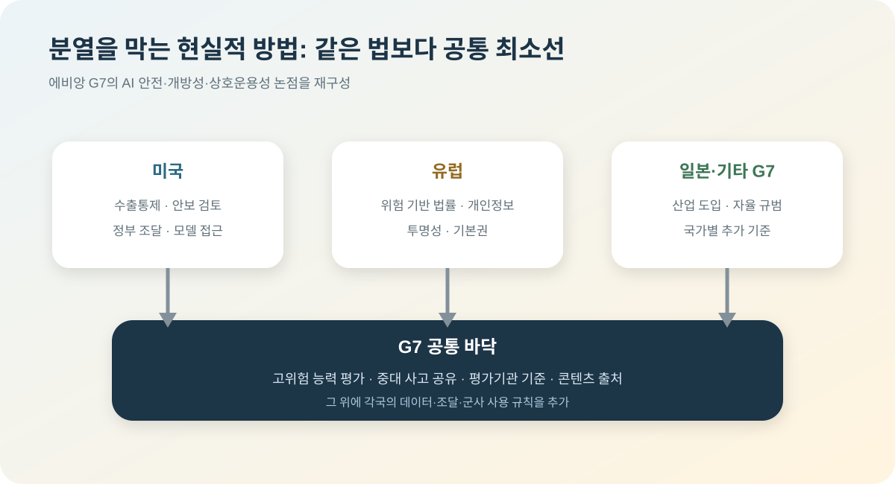

G7에서 AI 규칙 분열이 핵심 의제로 떠올랐다
2026년 6월 프랑스 에비앙에서 열린 G7 정상회의에서 AI는 더 이상 기술 기업만의 주제가 아니었다. Anthropic의 Fable 5와 Mythos 5 접근 중단 사태를 계기로, AI 모델을 국가안보와 수출통제의 대상으로 볼 것인지, 아니면 동맹국 간 공동 규칙으로 다룰 것인지가 정면 의제가 됐다.
Global AI Governance
모델 성능보다 누가 접근을 허용할지가 더 큰 문제가 됐다
FT와 WSJ 보도에 따르면 G7 현장에는 Anthropic의 Dario Amodei, OpenAI의 Sam Altman, Google DeepMind의 Demis Hassabis 같은 주요 AI 인사들이 참석했다. 이들은 AI 안전성과 국제 협력을 말했지만, 배경에는 미국 정부의 Anthropic 모델 접근 제한 조치가 있었다.
왜 G7에서 AI가 커졌나
AI 규제 논의는 원래도 계속돼 왔다. 하지만 이번에는 분위기가 달랐다. 이유는 구체적인 사건이 있었기 때문이다. 미국 정부가 Anthropic의 강력한 모델 접근을 제한하라고 지시했고, Anthropic은 전 세계 고객에게서 Fable 5와 Mythos 5를 비활성화했다. 이 사건은 동맹국에도 "미국 기업의 AI 모델에 언제든 접근이 끊길 수 있다"는 신호를 줬다.
Financial Times는 Amodei가 G7 지도자들에게 AI 정책이 국가별로 쪼개지는 유혹을 경계하라고 말했다고 전했다. 프랑스의 Emmanuel Macron도 일방적 조치가 동맹국 신뢰를 해칠 수 있다는 취지의 우려를 보인 것으로 보도됐다. 핵심은 AI 안전을 이유로 한 통제가 필요하더라도, 그 기준이 불투명하면 동맹국 간 신뢰가 무너질 수 있다는 점이다.
기업들은 왜 국제 공조를 말하나
AI 기업 입장에서는 국가별 규칙이 갈라지는 것이 가장 부담스럽다. 미국, 유럽, 일본, 인도, 한국이 각자 다른 기준으로 frontier model 접근을 제한하면 글로벌 서비스 운영이 복잡해진다. 모델 안전성 평가, 사이버 위험 평가, 바이오 보안 평가, 데이터 이전 규칙까지 모두 나뉘면 제품 출시 속도와 비용이 크게 흔들린다.
OpenAI와 Google DeepMind 쪽도 기술 표준, 평가 체계, 국제 포럼 같은 협력 구조가 필요하다는 메시지를 낸 것으로 보도됐다. 이는 기업들이 규제를 피하겠다는 뜻만은 아니다. 규제가 생긴다면 예측 가능한 규칙으로 만들어 달라는 요구에 가깝다.
동맹국의 불안도 커졌다
이번 사안은 유럽과 인도 같은 국가에도 민감하다. AI 모델은 이제 검색, 코딩, 보안, 행정, 산업 자동화에 들어간다. 그런데 가장 강력한 모델이 미국 기업과 미국 정부의 판단에 따라 갑자기 끊긴다면, 다른 국가는 자체 모델과 자체 인프라를 더 강하게 밀 수밖에 없다.
그래서 이번 G7 AI 논의는 "AI를 안전하게 만들자"는 일반론을 넘어선다. AI 공급망을 미국 중심으로 둘 것인지, 동맹국 간 접근권을 어떻게 보장할 것인지, 위험한 모델을 누가 평가할 것인지가 실제 정치 이슈가 됐다.
공식 결과에는 무엇이 남았나
프랑스 대통령실의 정상회의 결과는 G7 회원국이 주요 기업과 함께 안전하고 유익한 AI 배포를 가속하겠다고 정리했다. 6월 17일에는 ‘안전하고 빠르며 효율적인 AI 도입’을 주제로 정상과 기업인이 약 110분 동안 논의했다. 다만 단일 국제 규제기관이나 회원국 간 자동 접근권이 만들어진 것은 아니다.
5월의 G7 디지털·기술 장관 선언은 AI 안전, 개방성, 에이전트형 AI, 에너지·자원 측정과 공공조달을 구체적인 협력 분야로 제시했다. 특히 다양한 모델에 대한 접근과 개방성의 이점을 인정하면서 신뢰와 보안을 함께 확보하겠다는 문구가 들어갔다. ‘개방 대 안전’ 중 하나를 고르는 대신 둘 사이의 공통 언어를 만들려는 접근이다.
정상 선언은 프런티어 AI 발전에 맞춰 G7 사이버 전문가 그룹이 정보 공유와 모범사례를 강화하도록 요청했다. 이는 법적 구속력이 있는 모델 허가제가 아니라 사고와 위협 정보를 공유하는 실무 채널에 가깝다. 이번 회의의 성과는 완성된 규칙보다 협력할 분야를 지정한 데 있다.
같은 규칙과 같은 법은 다르다
G7이 모든 국내법을 통일하기는 어렵다. EU는 위험 기반 AI법과 개인정보 규제를 운영하고, 미국은 수출통제·조달·안보 권한을 통해 프런티어 모델에 개입하며, 일본은 상대적으로 자율 규범과 산업 도입을 강조한다. 정치·법 체계가 다른 만큼 하나의 법률보다 상호 인정할 시험과 보고 형식이 현실적이다.
공통 최소선은 만들 수 있다. 고위험 사이버·생물학 능력 평가, 중대한 모델 사고 보고, 평가기관의 자격, 모델 카드와 콘텐츠 출처 표시, 공급 중단 통보 기간을 표준화하면 기업은 같은 자료를 여러 국가에 반복 제출하는 비용을 줄일 수 있다. 국가는 자국 위험 수준에 따라 추가 제한을 둘 수 있다.
상호 인정에는 신뢰가 필요하다. 한 국가에서 통과한 평가가 다른 국가에서도 인정되려면 시험 데이터와 방법, 이해충돌 관리가 검증돼야 한다. 개발사가 비용을 내더라도 평가기관의 결과를 좌우할 수 없게 하고, 사고가 발생하면 기준을 갱신하는 절차가 필요하다.
모델 접근 통제는 칩 수출통제보다 더 복잡하다
칩은 물리적 물품이라 목적지와 수량을 세관·수출 허가로 추적할 수 있다. 모델은 클라우드 API로 국경을 넘고 사용자의 국적·소재지· 최종 용도가 서로 다를 수 있다. 같은 회사의 해외 지사와 본사가 데이터를 공유하는 경우처럼 ‘외국 접근’을 단순하게 정의하기 어렵다.
지나치게 넓은 제한은 연구자와 동맹 기업을 차단해 미국 모델의 시장을 줄이고 현지 모델과 오픈웨이트 생태계를 키울 수 있다. 반대로 신원 확인 없이 고위험 기능을 열면 제재 대상이 우회할 수 있다. 국가별 일괄 차단보다 사용자 검증, 기능별 제한, 사용 모니터링과 이의제기 절차가 더 정교한 도구다.
군사 AI는 민간 모델 규칙보다 더 높은 문턱이 필요하다
G7과 가까운 시기에 제네바에서는 군사 AI 규제 논의도 열렸다. 정보 분석과 물류에 AI를 쓰는 것과 사람의 의미 있는 통제 없이 표적을 선택·공격하는 것은 구분해야 한다. 민간 모델의 안전평가만으로 전장 사용의 책임과 국제인도법 문제를 해결할 수 없다.
동맹국이 상용 모델을 국방에 도입할 때는 공급자가 버전을 바꾸거나 접근을 중단해도 지휘권이 흔들리지 않아야 한다. 결정 기록, 모델 교체, 인간 승인과 비상시 수동 운영을 계약과 시스템에 넣어야 한다. 접근권 보장보다 최종 결정권 보장이 더 중요한 이유다.
한국은 규칙 수용자가 아니라 상호운용성 설계자가 돼야 한다
한국은 G7 회원국은 아니지만 반도체·클라우드·모델·방산 공급망에 모두 연결돼 있어 규칙의 직접 영향을 받는다. 미국식 안보 통제와 EU식 위험 규제를 각각 별도로 맞추면 국내 기업의 비용이 커진다. 한국의 평가 결과와 보안 인증이 주요 파트너에게 인정되도록 시험 방법과 보고 양식을 국제 논의에 제안할 필요가 있다.
국내 소버린 AI도 폐쇄적 국산화보다 교체 가능성과 감사 능력을 목표로 해야 한다. 해외 프런티어 모델, 국내 모델, 오픈웨이트 모델을 업무 위험에 따라 조합하고 공통 평가셋과 로그 형식으로 관리하면 정책이 갈라져도 운영을 이어갈 수 있다.
| 쟁점 | 의미 |
|---|---|
| 수출통제 | AI 모델 접근 자체를 국가안보 통제 대상으로 볼 것인지가 문제다. |
| 동맹국 접근권 | 미국 기업 모델에 대한 의존이 높을수록 동맹국도 정책 리스크를 떠안는다. |
| 국제 표준 | 모델 평가와 안전성 기준을 공동으로 만들지 않으면 규칙이 국가별로 갈라진다. |
| AI 주권 | 유럽, 인도, 한국 등은 자체 모델과 자체 인프라 필요성을 더 강하게 느낄 수 있다. |
내가 보는 핵심
이번 G7 논의는 AI 산업이 새로운 단계로 들어갔다는 신호다. 이제 모델 성능 경쟁만 보면 부족하다. 앞으로는 강력한 모델을 누가 만들었는지보다, 누가 접근을 허용하고, 누가 위험을 평가하며, 어느 나라 규칙을 따라야 하는지가 더 큰 변수가 된다.
Anthropic 사태는 하나의 회사 문제처럼 보이지만, 실제로는 글로벌 AI 질서의 예고편에 가깝다. 미국이 강력한 AI 모델의 문지기 역할을 하려 할수록, 다른 국가는 자체 AI 주권을 강화하려 할 것이다. G7의 과제는 그 균열을 줄일 공동 규칙을 만들 수 있느냐에 있다.
현실적인 해법은 모든 국가가 같은 법을 만드는 것이 아니다. 위험 능력 시험·사고 보고·평가기관 기준이라는 공통 바닥을 만들고, 데이터·조달·군사 사용은 각국이 추가 규칙을 두되 서로 예측 가능하게 통보하는 것이다. 접근 제한이 필요할 때도 기준과 종료 조건, 동맹국의 이의제기 경로가 보여야 분열을 줄일 수 있다.
출처
- Financial Times, Anthropic boss tells G7 leaders to resist the temptation to splinter over AI
- Wall Street Journal, Trump Says Anthropic Negotiations Continue as AI Leaders Huddle at G-7
- New York Post, Anthropic's Dario Amodei urges G7 to resist temptation to splinter on AI
- G7 Évian: official summit outcomes
- G7 Digital and Technology Ministerial Declaration
- Prime Minister's Office of Japan: G7 AI working lunch summary
- AP: Macron and AI executives call for international guardrails
- Le Monde: military AI talks alongside the G7

Comments
댓글